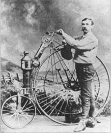

Arc Vector Electric Motorcycle

The Arc Vector electric motorcycle, capable of hitting a top speed of over 200 kmph, will make its first public appearance at the Goodwood Festival of Speed from July 4-7 alongside other superbikes and performance motorcycles. Arc founder and CEO Mark Truman will be the person who will ride the Vector on the famed hill climb. The final production model Vector will be powered by a 399V electric motor that churns out close to 140 bhp and 85 Nm of peak torque. It will be a limited edition model and only 355 units will be made for sale.
Yamaha XV1900A
The Yamaha XV1900A cruiser was developed to exploit the large displacement end of the market for large cruisers. Yamaha had a well established range of big "Star" cruisers which went up to the Wild Star 1600 cc but there was a need to redesign the engine to meet anticipated exhaust emissions regulations and the opportunity to update the styling, which had remained largely unchanged for a decade
One of the first steam power motorcycles.
In the 1860s Pierre Michaux, a blacksmith in Paris, founded 'Michaux et Cie' ("Michaux and company"), the first company to construct bicycles with pedals called a velocipede at the time, or "Michauline".[2] The first steam powered motorcycle, the Michaux-Perreaux steam velocipede, can be traced to 1867, when Pierre's son Ernest Michaux fitted a small steam engine to one of the 'velocipedes'.
Custom cruiser (Harley Davidson based)

Cruisers are modeled after large American machines from the 1930s to 1960s – the most popular being Harley-Davidsons. These bikes have a V-twin engine designed for low-end torque and offer a low riding position, high handlebars and forward foot pegs – causing riders to lean back slightly. This seating may not be ideal for beginners who are anticipating riding at higher speeds for long periods of time, since pulling back on the handlebars to battle wind can be tiring.
Triumph Model H

At the start of the First World War in 1914 the British Government needed effective communications with front line troops and replaced messengers on horses with despatch riders on motorcycles. A number of models were tested for suitability and the Triumph Model H was selected. With the rear wheel driven by a belt, the Model H was fitted with a 499 cc air-cooled four-stroke single-cylinder engine. It was also the first Triumph not to be fitted with pedals, so was a true motorcycle
KTM 1290 Super Adventure S 2020

Whether it's cracking the throttle wide open out of an exhilarating tarmac corner, or braking hard while tipping it into a gravel turn, pushing the laws of physics is what the KTM 1290 SUPER ADVENTURE S is made for. Its combination of 160 hp (119 kW), 140 Nm of torque and a mere 215 kg dry weight is kept in check by the most advanced electronics in the world of motorcycling. All you have to do is focus on the road ahead and hold on tight, while enjoying every twist and turn as you push further and further.